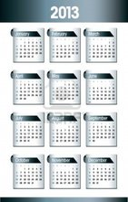

Month Metaphors: You can use a metaphor as a springboard to write a Month Metaphor poem. The format is the same as when you did writing about weather.|
march stagger skip prance float tiptoe gallop hop limp hobble canter |
wobble sneak zoom tramp dance shuffle scurry spring glide flutter lurch |
creep stumble trot totter strut skate slide leap slink skulk crawl |
steal bound bounce dart lope trudge plod advance drag slip saunter |
|
JULY trudges right in with a bang. It crawls around on the hot ground, leaps around spreading warmth, then glides right out of the way. ---Daniel Day-Lewis (Grade 6) |
SEPTEMBER creeps in quietly and unnoticed. It just sits there waiting, watching for something to happen. Then, just a quickly as before, it creeps back out. ---Chris Pine (Grade 7) |
NOVEMBER slides in on clouds of snow and rain. It blows away the warmth, and sneaks in the cold, then drags away. ---Zachary Quinto (Grade 8) |